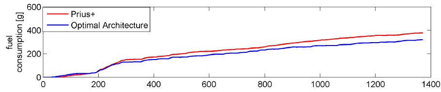

Current research
Hybrid powertrain architecture design (with Alparslan Emrah Bayrak)

For a system with two motors and two planetary gears,
our previous research showed that a thousand
feasible configurations (driving modes) exist. As a powertrain may consist of multiple configurations
(such as in Chevy Volt), this large number of candidate configurations will make the search of an optimal
powertrain intractable. Existing studies often restrict the space for architecture search based on human
experience and rules, excluding chances for discovering innovative designs.
Learning from existing
configurations to form better search heuristics is therefore desired in such engineering tasks. While the
idea already exists, e.g., in response surface methods, the particular difficulty here is that
configurations are often represented as graphs (e.g., a powertrain configuration is commonly represented
as a bond graph). Successful learning from graphical data requires a problem-specific extraction of graph
features, on top of the large collection of graph properties.
Revealing preference tradeoff between styling and functionality (with Namwoo Kang)

When people buy cars, they consider not only price, fuel economy or safety but also "complex attributes" that
are usually hard to be quantified, such as styling and social impact.
In many cases, these complex attributes are critical in consumer decision making. Yet, how to reveal
the importance of these attributes is still a challenge in marketing and design research.
Our current approach aims to quantify adaptively the utility of complex attributes during an online
interactive choice-based conjoint analysis. Current survey application can be found here.
Learning from crowd evaluations (with Alex Burnap)

Learning from people has always been a challenge due to noisy human responses. In some cases, this is due to people's different level of understanding, e.g., whether people can evaluate building layouts correctly depends on their experience in this design topic; in other cases, it could be their own preferences that lead to different evaluations on the same design. For example, my previous study showed that when presented a pair of car designs and asked "which car looks safer", half of the participants voted for the "stream-lined" design while the other half for the boxy one.
Such differences in knowledge or preference could be explained by demographic background of people or identified through their social interactions including evaluations on other design topics. The key here is the development of learning algorithms that can extract high-level information to better explain the observations from the massive joint data of designs, people profiles and interactions. Existing feature extraction methods such as sparse-coding and restricted Boltzmann machines will be investigated.
Project archive and misc.
carMesh (Paper):
This is an experiment where I tested 1) if there is anyway to automate designs according to users' preference, avoiding the slow pace of evolutionary algorithms, 2) how complicated a 3D modeling code is.
randomImages:
This is a webGL implementation of Karl Sims' early work, but needs more polish. It generates random tree representations of animations and burns your GPU. Refresh the page to see something new.
You will probably see a few interesting things but most of them are nonsense. Question: How can we automatically generate animations that make sense?
topOpt:
This is a simple javascript implementation of Professor Sigmund's structure analysis code.
Left click your mouse to remove/add material; Ctrl+left click to assign a force; Double click to restart.